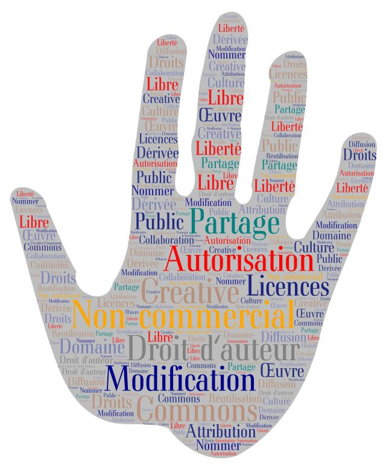

Les Licences Creative Commons sans s’énerver
Introduction
Site officiel des Creative Commons
Transcription
A : Eh, eh, regarde, j'ai fini ! "Comment créer une BD avec votre classe, en 10 étapes et demie".
B : Oh ? Super ! Fais voir.
B : Attends... Dis-moi, c'est quoi ce petit C dans un rond, là ?
A : Bah, c'est le copyright !
B : Le copyright ?
A : Bah, oui ! C'est comme ça qu'on fait, non ?
B : Non, je t'avais parlé de licence CC.
A : Euuuh... Mais c'est un C que j'ai mis ?...
B : Oui, mais non ! C'est pas pareil. CC avec deux C.
A : Deux fois plus de copyright ?!
B : Booon... On va revoir tout ça ensemble...
Origine des licences Creative Commons
Code
de la
propriété intellectuelle
Droit d'auteur : Art.
L111-1
Sa durée : Art.
L123-1
Creative Commons: A Timeline
The Story of Creative Commons
Transcription
B : D'abord, à quoi sert le copyright ?
A : Ça empêche que n'importe qui puisse faire n'importe quoi avec nos œuvres ?
B : En gros, oui. Le symbole du copyright veut dire que tu gardes tous tes droits. Mais si jamais
quelqu'un veut utiliser ton oeuvre pour en créer une autre ? Imagine, tu as pris une superbe photo du parc d'à
côté.
A : Très fleuri, en ce moment !
B : Tu mets ta photo en ligne sur ton blog. Est-ce que quelqu'un peut utiliser ta photo pour imprimer des
cartes de voeux et les vendre ?
A : Non, il faut me demander. Et puis, moi aussi, je veux des sous !
B : Et si on veut se servir d'un dessin que tu a posté sur Instagram pour décorer le programme d'une fête ?
A : Oh, ça c'est sympa, c'est flatteur !
B : Mais avec le copyright, ce sera compliqué.
A : Ooh...
B : ... Et c'est pour ça qu'on a créé ... Les licences Creative Commons !!!
*A applaudit*
B : Hem. Les licences Creative Commons, ou licences CC, pour faire court, ont été créées en 2002, aux
Etats-Unis. Elles sont gérées par une organisation à but non lucratif. On partageait de plus en plus sur
Internet... C'était un cauchemar pour savoir qui était d'accord pour qu'on réutilise ses
créations.
A : ... Surtout quand tu parles pas toutes les langues de la planète.
B : Les licences CC permettent aux créateurs et créatrices d'indiquer simplement de
quelle façon les internautes peuvent utiliser leurs oeuvres. Les 6 contrats ont été adaptés dans plusieurs
pays. Dès
2004, la version 2.0 arrive. Et après, paf, en 2007, la version 3.0 !
A : J' t'admire, j'ai pas la mémoire des dates.
B : En 2009, il y a une p'tite nouvelle dans la famille des licences CC !
A : Vraiment ? Félicitations !
B : On l'appelle licence CC0. Elle permet de mettre une oeuvre dans le domaine public.
A : Mais pourquoi zéro ? C'est pas très sympa.
B : Je vais t'expliquer de suite, tu vas voir. En 2013, on passe à la version 4.0, internationale. Et 10
ans plus tard, on y est encore !
A : Ça change quoi, ces versions ?
B : Par exemple, l'attribution est désormais obligatoire avec les 6 licences CC 4.0 originales ! C'est-à-dire
qu'il
faut toujours mentionner quelque part la personne qui a créé l'oeuvre originale.
A : Ok, j'ai mis un deuxième C à côté du premier.
B : Euuh, ça ne marche pas tout à fait comme ça... Bref, la licence CC0 !
Licence CC 0
Concept juridique
Termes & conditions d'utilisation
Transcription
A : Mais alors, la CC0, elle est nulle, c'est ça ? Parce que le domaine public, c'est public ! C'est à tout
le monde !
B : Ah, tu as bien compris ! Cette licence-là, elle permet tout.
A : Mais... Qui va laisser les gens utiliser ses créations pour devenir riche et célèbre sans rien en
retour ?
B : Des cœurs généreux ! L'objectif de la licence Creative Commons 0, c'est de partager son oeuvre le
plus largement possible. Son logo représente un zéro, parce que tu es d'accord pour n'exercer aucun de tes
droits d'auteur, zéro. On trouve aussi une variante avec un sigle de copyright barré. La licence CC0 te permet
d'offrir au monde entier la possibilité d'utiliser ton œuvre, en la copiant, la modifiant, ou la partageant,
même à des fins commerciales. Même pas besoin d'indiquer que c'est la tienne ! C'est un don à la communauté.
A : Mais... Si ton œuvre ne te rapporte aucun bénéfice, et même pas la gloire, quel est le but ?
B : Offrir gracieusement son talent. Aider l'humanité.
A : Carrément ?
B : Carrément.
A : Donc... Si je photographie... Le Grand Canyon par exemple, et que j'indique cette licence sous l'image,
tout le monde peut l'utiliser ?
B : Exactement, tout le monde a le droit, grâce à la licence CC0, sans même devoir indiquer l'auteur.
Maintenant... Question piège !
A : Quoi ? Oh, non...
B : Cette fois, tu prends une photo dans la cour du Louvre, à Paris. On y voit essentiellement les bâtiments
du palais, avec un petit bout de pyramide dans un coin. Peux-tu proposer cette image sous une licence CC0 ?
A : Ah, je sais que le domaine public, ça inclut toutes les œuvres crées par quelqu'un mort depuis longtemps.
B : Depuis 70 ans, oui.
A : Alors, c'est ok, je pense.
B : Bonne réponse ! Maintenant, figure-toi que ta seconde photo cadre la grande pyramide du Louvre dans toute
sa splendeur, avec un bout de palais derrière. Peux-tu utiliser la licence CC0 ?
A : ... Mais... C'est la même chose qu'avant...
B : Erreur ! Le sujet de cette photo, c'est la pyramide elle-même. Et est-ce que son créateur, son architecte
est mort depuis plus de 70 ans ?
A : ... Je sais pas.
B : Monsieur Pei est mort en 2019. Je te laisse faire le calcul...
A : Mais alors, pour la licence ?...
B : Comme tu n'as pas tous les droits sur l'image, tu ne peux pas décider de sa licence de façon unilatérale.
Et si jamais tu la mettais quand même sous licence CC0, les ayants-droits de Monsieur Pei pourraient venir te
compliquer la vie.
A : ... Donc, si je ne veux pas de soucis ?
B : Tu es libre de choisir une licence uniquement pour des œuvres sur lesquelles tu as tous les droits.
Licence CC BY
Concept juridique
Termes & conditions d'utilisation
Transcription
A : Ok, et si je veux que mon nom apparaisse ?
B : Il te faut une licence CC BY !
A : Qu'est-ce que ça veut dire, CC BY ?
B : Alors, le BY de CC-BY, c'est l'équivalent de "par" en français. Cette licence est symbolisée par une
silhouette humaine dans un cercle. Elle pose une seule condition : l'attribution. Tu dois absolument faire
figurer quelque part le nom de l'auteur. Tu as le droit d'utiliser l'œuvre comme tu veux et tu peux la
modifier.
A : Comment ça, la modifier ?
B : Si tu veux, je sais pas… Créer un poster pour le club de théâtre, par exemple ! Imagine, tu trouves une
image d'un personnage qui te plaît, mais sans moustache. Si cette image est sous licence CC BY, tu peux lui
ajouter une moustache, si ça te chante !
A : Mais si je peux tout faire, comme tu dis, ça sert à quoi d'utiliser une licence ?
B : Non, non, pas tout faire ! Tu devras créditer l'auteur, indiquer le
lien vers la licence et citer les modifications effectuées. De plus, tu n'as pas le droit de sous-entendre que
l'auteur partage tes opinions, ou est impliqué dans ton projet.
A : Et après, je peux dire que c'est mon œuvre et obtenir une rémunération ?
B : Oui, c'est possible avec la licence CC BY. Mais si jamais tu ne fais aucune modification, tu ne peux pas
partager l'œuvre en prétendant que c'est toi qui l'as créée !
Licence CC BY SA
Concept juridique
Termes & conditions d'utilisation
Transcription
A : La CC BY SA, ça doit être une licence CC BY un peu spéciale, je suppose ?
B : Tout à fait. SA, c'est l'abbréviation de "Share alike", qu'on traduit en français par "Partage sous les
mêmes conditions". Son symbole, c'est un logo de copyright qu'on a mis la tête en bas. Avec une
petite flèche pour représenter la libre circulation des connaissances et des arts.
A : Et c'est quoi qui change ?
B : C'est la même chose, sauf que l'image que tu as modifiée pour ton poster, tu
sais, la petite moustache ? Tu devras obligatoirement la diffuser sous la même licence que l'image de départ.
Quand on utilisera ton poster, on citera ton nom pour le partager et on pourra le modifier.
A : ... Ça ressemble beaucoup à du CC BY, non ?
B : Ça y ressemble beaucoup, c'est vrai. Pour comprendre la différence, il nous faut un contexte un peu
particulier... Admettons que tu diffuses ton guide sur la BD sous licence CC BY. Quelqu'un le récupère, le
trouve chouette, le traduit dans sa langue...
A : Ça compte comme une modification, ça ?
B : Oui, car une traduction contient toujours une part d'interprétation. Donc, cette personne s'est approprié
ton oœuvre. Elle décide d'y ajouter plusieurs autres guides de sa création et d'imprimer le tout pour le
vendre.
A : ... Et j'ai juste droit à mon nom au sommaire, si je te suis ?
B : Oui. Comme ton guide était sous licence CC BY, et non pas CC BY SA... Cette personne a le droit de faire
figurer sur son ouvrage la mention "Tous droits réservés". Ce qui veut dire que plus personne ne pourra en
faire une utilisation commerciale, ou le modifier, ou le diffuser de son côté. En gros, ce n'est plus une
œuvre libre.
A : Hm... C'est un peu triste...
B : La licence CC BY SA sert à éviter ça : elle perpétue l'idéal d'usage libre des ressources. La nuance
est... politique, pourrait-on dire.
Licence CC BY NC
Concept juridique
Termes & conditions d'utilisation
Transcription
A : Allez, dis-moi le prochain code secret de licence !
B : CC BY NC ! Elle est simple, celle-là.
A : Mouais...
B : Si, si, je t'assure ! NC signifie "Noncommercial" en anglais, donc "non commercial" en français. Le
symbole de cette licence, c'est un signe monétaire barré. Il y a plusieurs variantes avec l'euro, le dollar et
le yen. Tu peux modifoer et exploiter l'œuvre comme tu le souhaites. Souviens-toi juste que tu ne peux pas
tirer profit de ce que tu crées avec. Par exemple... Tu sais, la musique de ma sonnerie de téléphone, c'est
moi qui l'ai
composée ?
A : Ouah, vraiment ?!
B : En lui attribuant une licence CC BY NC, je permettrai à tout le monde de l'utiliser comme
bande son. Dans un remix, une vidéo sur Youtube... Mais si cette vidéo a du succès, et que la chaîne qui la
diffuse devient monétisée... Je pourrais demander à ce que la vidéo soit retirée ! Ou à ce qu’on me paye pour
utiliser ma musique !
A : Oooh !... D'accord, et pour le partage, juste en citant l'auteur ?
B : Dans tous les cas, il faut citer l'auteur, surtout lorsque tu modifies son œuvre.
Licence CC BY ND
Concept juridique
Termes & conditions d'utilisation
Transcription
A : Et il existe quoi, comme autre CC ?
B : Euuuh... Il y a CC BY ND ! ND veut dire "No derivatives", ou en français "Pas de modifications". On la
représente grâce au signe "égale". Attention à ne pas la confondre avec la licence CC BY SA ! Le partage
dans des conditions identiques n'est pas la même chose qu'un partage à l'identique ! Si une création est
placée sous licence CC BY ND, ça signifie que tu peux la partager, gagner de l'argent avec... Mais que tu ne
peux en aucun
cas la modifier.
A : Aïe ! Adieu, la moustache !
B : Eh oui ! Mais tu pourras utiliser cette image dans une vidéo monétisée sur Youtube.
A : Et sans rien citer?
B : Tu m'écoutes ? Bien sûr que si ! Il faut impérativement citer l'artiste afin de respecter le droit de
paternité. La mention BY est là, toujours !
A : D'accord, donc je peux déjà rajouter "BY" après mes deux C.
B : Autre exemple, ma cousine a écrit une pièce de théâtre. L'histoire est très sympa, mais c'est trop long.
Dommage, elle est sous licence CC BY ND ! Pas le droit de la raccourcir.
A : Même en demandant gentiment ?
B : Haha, c'est vrai qu'en demandant directement l'autorisation, on peut parfois contourner les règles de la
licence.
Si ma cousine m'y autorisait, je pourrais raccourcir sa pièce... Et enlever un personnage !
Licence CC BY NC SA
Concept juridique
Termes & conditions d'utilisation
Transcription
A : ... Mais il y a encore beaucoup de licences ?
B : Juste deux.
A : Ouf ! Je commençais à saturer, moi.
B : Haha, on peut faire une pause, si tu veux ?
A *dramatique* : Non ! Qu'on en finisse !
B : Alors... On peut continuer avec la licence CC BY NC SA.
A : Toujours plus long ! On les combine. Comme dans les films de robots, tu sais ?
B : Rappelle-toi, on vient de voir CC BY NC.
A : Oui, laisse-moi réfléchir... On peut partager, modifier, mais pas utiliser notre création pour
gagner de l'argent. ... Et il faut citer le nom de l'auteur.
B : Bien joué, tu as retenu !
A : C'était il y a deux minutes, aussi... La partie SA, c'est un peu moins frais, par contre.
B : Effectivement... Eh bien, la mention SA rajoute l'obligation de partage dans les mêmes
conditions. Les œuvres issues de modifications hériteront de la licence de l'œuvre initiale. Sans
changement possible.
A : Okay, j'ai compris !
Licence CC BY NC ND
Concept juridique
Termes & conditions d'utilisation
Transcription
A : La dernière ! La dernière !
B : C'est la licence CC BY NC ND.
A : Ouh lalalaaa, je t'écoute.
B : Comme son nom l'indique, il s'agit d'une combinaison des licences CC BY NC et CC BY ND. On peut seulement
partager l'œuvre, pas d'utilisation commerciale ni de remix possible. Et il faut toujours citer l'auteur.
A : Donc, je ne peux ni rajouter de moustache, ni vendre mes posters ?
B : Correct.
A : Eh, attends ! Si on met du texte sur la photo ? Ou qu'on la recadre ? C'est autorisé, ça ?
B : Non, c'est aussi considéré comme une modification.
A : C'est un peu sévère, quand même...
B : Oui, on dit souvent que c'est la licence la plus restrictive du tas.
A : Ça peut être bien pour illustrer un exemple en cours, non ? Finalement, c'est moins pour les gens qui
veulent
créer une œuvre d'art. Une photo partagée avec cette licence, je peux simplement l'utiliser telle quelle ? En
disant "Photo prise par Telle-Personne" ?
B : Tout à fait.
En pratique
Licence Chooser
Use & remix - Giving attribution
Download & use our logos
Transcription
A : Donc quand on a choisi sa licence, il faut faire quoi, pour l'appliquer ?
B : Y a qu'à l'écrire quelque part.
A : Hein ? C'est tout ?
B : Oui, tu marques "Ce document est diffusé sous une licence internationale Creative Commons Attribution
4.0".
Ou "juste "CC-BY", si c'est cette licence que tu as choisie, bien sûr. Avec le petit logo approprié. Et puis
un
lien vers le site officiel des licences, si possible.
A : Mais il faut pas s'inscrire quelque part ?
B : Non, non.
A : Et y a rien à payer ?
B : Non plus.
A : Mais c'est super facile !
B : Ah, un détail : Si tu trouves une image ou autre chose que tu voudrais utiliser sur Internet avec une
licence CC quelconque, méfie-toi !
A : ...? Mais, tu viens pas de m'expliquer que ...
B : Enfin, je veux dire... Réfléchis, demande-toi si ça n'est pas trop beau pour être vrai.
A : ... Trop beau ?
B : Par exemple, une photographie d'une oeuvre d'art contemporain, que tu trouves sur Wikipédia. Les images de
Wikipédia sont censées toutes avoir une licence adéquate au partage. Mais...
A : Oh, tu veux dire que quelqu'un a récupéré la photo quelque part, en douce ?
B : C'est une possibilité. Même si la volonté de partager des informations est louable, ça reste illégal.
Autre point : les droits des personnes qui figurent dans une oeuvre. Les modèles d'un photographe, l'équipe
d'une pièce radiophonique... On ne pourra pas décider d'une licence sans obtenir l'autorisation
de tout le monde. Ensuite, tu peux diffuser ton travail où tu veux sur Internet. Tu peux même le proposer sur
un site
partenaire des licences CC, comme YouTube, Wikimédia ou Flickr.
A : Waouh !
B : Alors, ce beau document que tu nous as apporté, sous quelle licence tu vas le mettre ?
A : Hmm... C'est sûr que ça va pas être CC0, parce que je veux qu'on sache que c'est moi qui l'ai fait.
Après, je dirais CC BY SA.
B : Tu veux donc laisser au monde la possibilité de modifier ce que tu as créé ?
A : Ouiii... Les gens ont surement des idées intéressantes à rajouter !
B : Tu les autorises aussi à vendre ces nouvelles idées mélangées aux tiennes ?
A : ... Et eux devront à leur tour autoriser qu'on vende des œuvres dérivées de leurs créations. J'ai bon ?
B : Tout bon ! Alors, reprends ton guide et rajoute les bonnes mentions ! Au passage, deux logos de
copyright ne peuvent pas remplacer le logo des Creative Commons, hein ?
A : Héhé, c'était pour rire...
Pour le respect des artistes et la diffusion de la Culture, utilisons les licences CC !
Testez vos connaissances
Donnez-nous votre avis sur cette ressource
Découvrez notre méthode de travail
Code : Cinq Un Six Six (en chiffres)
Sources consultées
Site officiel des licences CC
Share your work
Who we are
How
do Creative Commons licenses affect my moral rights, if at all?
The
Story of Creative Commons
A Story of Creative Commons - Timeline
Autres
Mise
en ligne officielle des licences Creative commons 4.0 en français
Les
licences Creative Commons sont valides. Qu’on se le dise !
Les
dangers des ressources sous licence Creative Commons
WConnaître
et utiliser les licences Creative Commons
UNESCO
Publications en libre
accès
JdR et licences
libres
Choisir une licence
ouverte, une affaire
de
goût ou de posture ?
Par le Collectif Humanités Numériques
Cette ressource est diffusée sous une licence
CC BY-SA 4.0
Cette page présente la situation de 2023.
L’avenir peut réserver des changements aux réglementations.
Crédits
Polices utilisées
Basteleur
Mourier
Shantell Sans
Noto Music